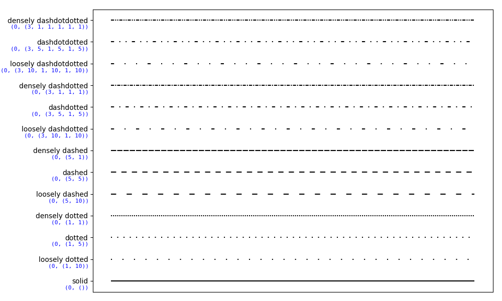

Version 2.2.4
Note
Click here to download the full example code
This examples showcases different linestyles copying those of Tikz/PGF.
import numpy as np
import matplotlib.pyplot as plt
from collections import OrderedDict
from matplotlib.transforms import blended_transform_factory
linestyles = OrderedDict(
[('solid', (0, ())),
('loosely dotted', (0, (1, 10))),
('dotted', (0, (1, 5))),
('densely dotted', (0, (1, 1))),
('loosely dashed', (0, (5, 10))),
('dashed', (0, (5, 5))),
('densely dashed', (0, (5, 1))),
('loosely dashdotted', (0, (3, 10, 1, 10))),
('dashdotted', (0, (3, 5, 1, 5))),
('densely dashdotted', (0, (3, 1, 1, 1))),
('loosely dashdotdotted', (0, (3, 10, 1, 10, 1, 10))),
('dashdotdotted', (0, (3, 5, 1, 5, 1, 5))),
('densely dashdotdotted', (0, (3, 1, 1, 1, 1, 1)))])
plt.figure(figsize=(10, 6))
ax = plt.subplot(1, 1, 1)
X, Y = np.linspace(0, 100, 10), np.zeros(10)
for i, (name, linestyle) in enumerate(linestyles.items()):
ax.plot(X, Y+i, linestyle=linestyle, linewidth=1.5, color='black')
ax.set_ylim(-0.5, len(linestyles)-0.5)
plt.yticks(np.arange(len(linestyles)), linestyles.keys())
plt.xticks([])
# For each line style, add a text annotation with a small offset from
# the reference point (0 in Axes coords, y tick value in Data coords).
reference_transform = blended_transform_factory(ax.transAxes, ax.transData)
for i, (name, linestyle) in enumerate(linestyles.items()):
ax.annotate(str(linestyle), xy=(0.0, i), xycoords=reference_transform,
xytext=(-6, -12), textcoords='offset points', color="blue",
fontsize=8, ha="right", family="monospace")
plt.tight_layout()
plt.show()
Keywords: matplotlib code example, codex, python plot, pyplot Gallery generated by Sphinx-Gallery